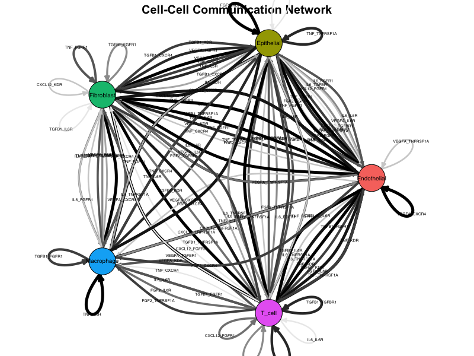
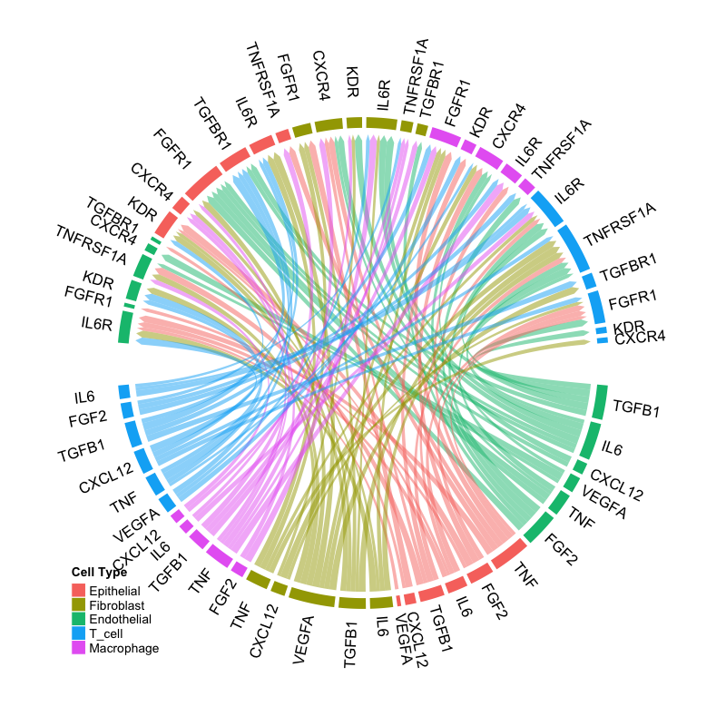
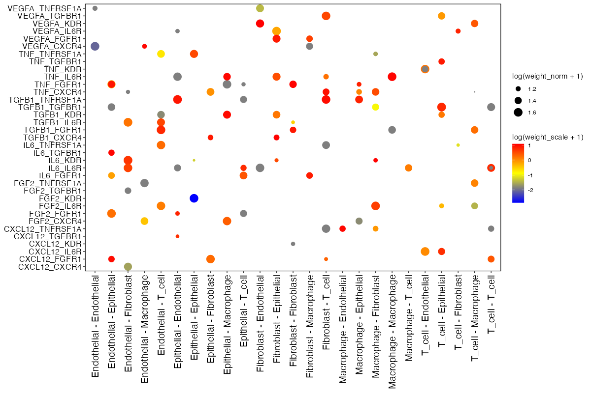
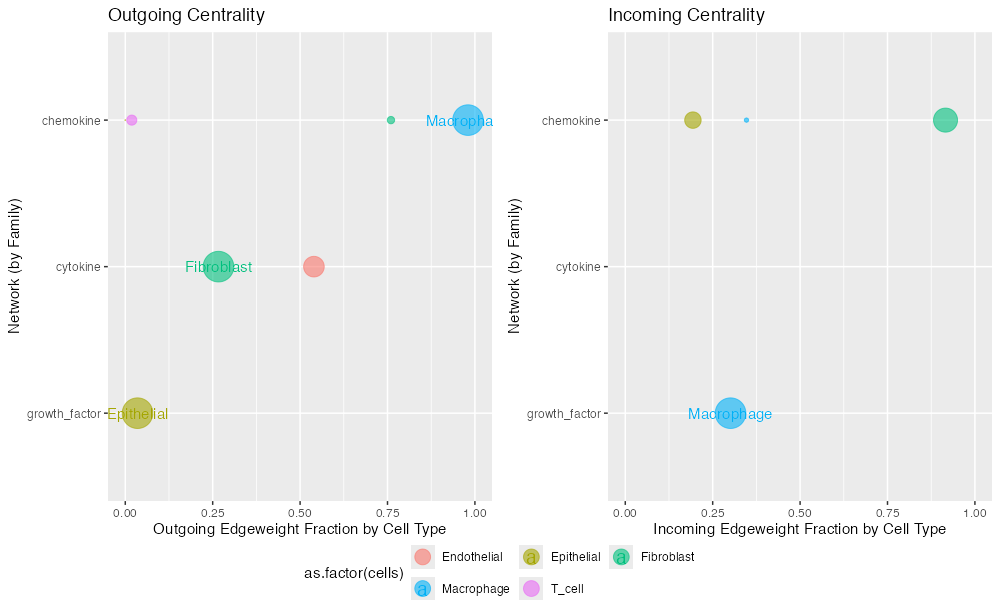
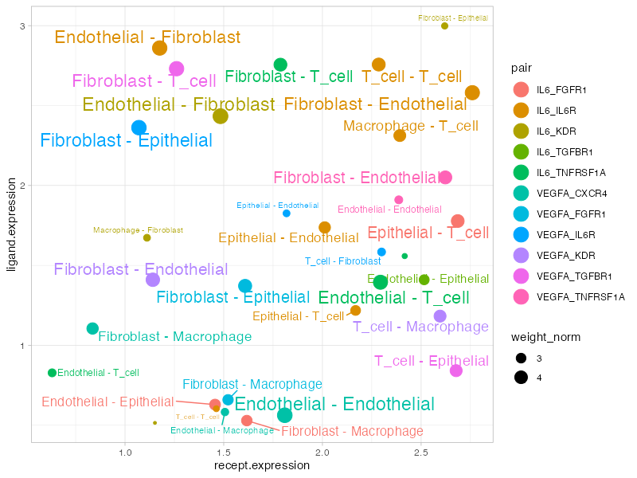

Overview
Connectome provides a comprehensive suite of visualization functions for exploring cell-cell communication networks. This gallery demonstrates each visualization type with example outputs and interpretation guidelines.
Example Data Preparation
All visualizations in this gallery use a mock connectome dataset for demonstration:
library(Connectome)
# Create mock connectome for demonstration
set.seed(42)
cell_types <- c("Epithelial", "Fibroblast", "Macrophage", "T_cell", "Endothelial")
ligands <- c("VEGFA", "IL6", "TNF", "CXCL12", "FGF2", "TGFB1")
receptors <- c("KDR", "IL6R", "TNFRSF1A", "CXCR4", "FGFR1", "TGFBR1")
modes <- c("growth_factor", "cytokine", "cytokine", "chemokine", "growth_factor", "growth_factor")
n_edges <- 150
mock_connectome <- data.frame(
source = sample(cell_types, n_edges, replace = TRUE),
target = sample(cell_types, n_edges, replace = TRUE),
ligand = sample(ligands, n_edges, replace = TRUE),
receptor = sample(receptors, n_edges, replace = TRUE),
mode = sample(modes, n_edges, replace = TRUE),
ligand.expression = runif(n_edges, 0.5, 3),
recept.expression = runif(n_edges, 0.5, 3),
ligand.scale = rnorm(n_edges, 0, 1),
recept.scale = rnorm(n_edges, 0, 1),
percent.source = runif(n_edges, 0.1, 0.8),
percent.target = runif(n_edges, 0.1, 0.8),
weight_norm = runif(n_edges, 0.5, 5),
weight_sc = runif(n_edges, -2, 2)
)
mock_connectome$pair <- paste(mock_connectome$ligand, mock_connectome$receptor, sep = "_")
mock_connectome$vector <- paste(mock_connectome$source, mock_connectome$target, sep = " - ")
# Filter for visualization
mock_filtered <- mock_connectome[mock_connectome$weight_norm > 2, ]Network Visualizations
1. NetworkPlot
The NetworkPlot() function creates an igraph-based
directed network visualization where nodes represent cell populations
and edges represent signaling interactions.
NetworkPlot(
connectome_filtered,
weight.attribute = "weight_norm",
title = "Cell-Cell Communication Network"
)
Network plot showing cell-cell communication. Nodes represent cell types, edges represent signaling interactions, and edge width is proportional to interaction strength.
Interpretation:
- Nodes: Each node represents a cell population
- Edges: Directed arrows indicate signaling direction (sender → receiver)
- Edge width: Proportional to edge weight (interaction strength)
- Edge color: Gradient from light to dark based on weight
- Layout: Force-directed layout positions strongly connected nodes closer together
2. CircosPlot
Chord diagrams provide an elegant circular representation of connectivity patterns, ideal for visualizing complex multi-cellular communication networks.
CircosPlot(
connectome_filtered,
weight.attribute = "weight_norm",
lab.cex = 0.8
)
Circos plot showing ligand-receptor interactions. Sectors represent ligands (outer) and receptors (inner), with ribbons connecting interacting pairs.
Interpretation:
- Sectors: Represent ligands and receptors grouped by signaling mode
- Ribbons: Connect ligand-receptor pairs with active interactions
- Ribbon width: Proportional to interaction strength
- Colors: Indicate source cell type or signaling mode
Dot Plot Visualizations
3. EdgeDotPlot
Matrix visualization showing all edges meeting specified criteria, perfect for systematic comparison across cell-cell vectors.
EdgeDotPlot(connectome_filtered)
Edge dot plot showing ligand-receptor pairs (y-axis) across cell-cell communication vectors (x-axis). Dot size represents normalized weight, color represents scaled weight.
Reading the plot:
- X-axis: Cell-cell vectors (Source → Target)
- Y-axis: Ligand-Receptor pairs
- Dot size: log(weight_norm + 1) - larger dots indicate stronger interactions
- Dot color: log(weight_sc + 1) - color intensity reflects z-scored expression
Centrality Analysis
4. Centrality
Hub and authority score analysis stratified by signaling mode, revealing which cell types are central senders or receivers in specific pathways.
Centrality(
connectome_filtered,
group.by = "mode",
weight.attribute = "weight_sc"
)
Centrality analysis showing hub scores (sending importance, left) and authority scores (receiving importance, right) for each cell type across signaling modes.
Interpretation:
- Hub score: Measures importance as a signal sender
- Authority score: Measures importance as a signal receiver
- Higher scores: Indicate more central role in the signaling network
- Mode stratification: Allows comparison across different signaling families
Scatter Plots
5. SignalScatter
Explore specific signaling mechanisms by visualizing ligand-receptor expression patterns across cell-cell vectors.
SignalScatter(
connectome_filtered,
features = c("VEGFA", "IL6"),
weight.attribute = "weight_norm",
label.threshold = 1.5
)
Signal scatter plot showing expression patterns for selected ligands. Each point represents a cell-cell interaction vector, with position determined by ligand/receptor expression.
Plot elements:
- X-axis: Receptor expression (scaled)
- Y-axis: Ligand expression (scaled)
- Dot size: Edge weight
- Color: Different ligand-receptor pairs
- Labels: Cell-cell vectors above threshold
Customization Tips
Color Palettes
# Custom cell type colors
my_colors <- c(
"Epithelial" = "#E41A1C",
"Fibroblast" = "#377EB8",
"Macrophage" = "#4DAF4A",
"T_cell" = "#984EA3",
"Endothelial" = "#FF7F00"
)
NetworkPlot(connectome_filtered, cols.use = my_colors)
CircosPlot(connectome_filtered, cols.use = my_colors)Filtering Before Plotting
# Filter to specific interactions
conn_subset <- FilterConnectome(
connectome,
modes.include = c("growth_factor", "cytokine"),
sources.include = c("Fibroblast", "Macrophage"),
min.pct = 0.1,
min.z = 0
)
NetworkPlot(conn_subset)Saving High-Quality Figures
# PDF for publication
pdf("network_plot.pdf", width = 10, height = 8)
NetworkPlot(connectome_filtered)
dev.off()
# PNG for presentations
png("circos_plot.png", width = 1200, height = 1000, res = 150)
CircosPlot(connectome_filtered)
dev.off()Visualization Selection Guide
| Question | Recommended Plot |
|---|---|
| Overall network topology | NetworkPlot() |
| Circular connectivity view | CircosPlot() |
| Edge details matrix | EdgeDotPlot() |
| Centrality by signaling mode | Centrality() |
| Specific gene interactions | SignalScatter() |
| Specific cell pair | CellCellScatter() |
| Compare conditions |
CompareCentrality(), CircosDiff()
|
| Differential analysis |
DiffEdgeDotPlot(),
DifferentialScoringPlot()
|
Session Info
sessionInfo()
#> R version 4.4.0 (2024-04-24)
#> Platform: aarch64-apple-darwin20
#> Running under: macOS 15.6.1
#>
#> Matrix products: default
#> BLAS: /Library/Frameworks/R.framework/Versions/4.4-arm64/Resources/lib/libRblas.0.dylib
#> LAPACK: /Library/Frameworks/R.framework/Versions/4.4-arm64/Resources/lib/libRlapack.dylib; LAPACK version 3.12.0
#>
#> locale:
#> [1] C
#>
#> time zone: Asia/Shanghai
#> tzcode source: internal
#>
#> attached base packages:
#> [1] stats graphics grDevices utils datasets methods base
#>
#> loaded via a namespace (and not attached):
#> [1] digest_0.6.39 desc_1.4.3 R6_2.6.1 fastmap_1.2.0
#> [5] xfun_0.56 cachem_1.1.0 knitr_1.51 htmltools_0.5.9
#> [9] rmarkdown_2.30 lifecycle_1.0.5 cli_3.6.5 sass_0.4.10
#> [13] pkgdown_2.1.3 textshaping_1.0.4 jquerylib_0.1.4 systemfonts_1.3.1
#> [17] compiler_4.4.0 tools_4.4.0 ragg_1.5.0 bslib_0.9.0
#> [21] evaluate_1.0.5 yaml_2.3.12 otel_0.2.0 jsonlite_2.0.0
#> [25] rlang_1.1.7 fs_1.6.6 htmlwidgets_1.6.4